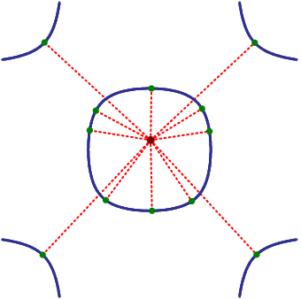
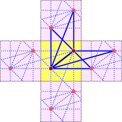
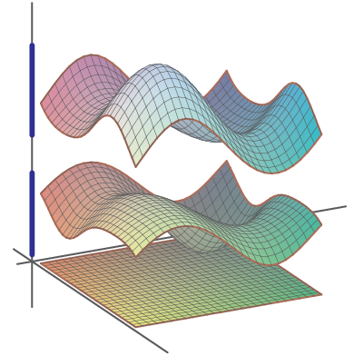

Applications of Bernstein's Other Theorem
Abstract:
Many of us are familiar with Bernstein's Theorem giving the number
of solutions in the torus to a general system of sparse polynomial
equations. The linchpin of his proof is what I like to call
Bernstein's Other Theorem, which describes exactly when a system
fails to be general in the above sense (Bernstein-general). His
bound is a simple consequence of this using, for example, the
characterization of mixed volume.
Polynomial systems in nature are rarely general given their
supports, and thus Bernstein's Theorem is only a priori a bound
for their number of solutions. Nevertheless, a surprising number
of polynomial systems from applications do achieve Bernstein's
bound. For such a system, the polyhedral homotopy give an optimal
algorithm for computing its solutions. My talk will discuss this
background and give some polynomial systems from applications
which are not general given their support, but are
Bernstein-general.
First Picture

Critical points of the distance function for a biquadratic curve
Second Picture

A discrete periodic graph with Z2-action and 2 vertices in fundamental domain.
Third Picture

A dispersion relation and spectrum for the aboce discrete periodic graph.